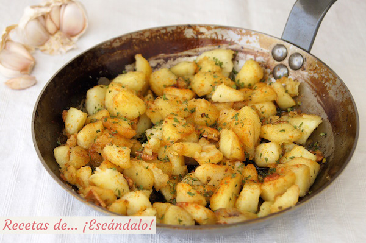

Recetas de patatas fritas

Características
- Dificultad: Fácil
- Raciones: 2-3
- Tiempo: 25 min
- Coste: Bajo
Ingredientes
| Ingrediente | Cantidad | Notas |
|---|---|---|
| Patatas | 300gr (3-4 ud.) | Para freir |
| Ajo | 1-2 dientes | Opcional |
| Aceite de oliva | 500 ml | Freir |
| Sal y pimienta | Al gusto | Al final |
Elaboración
Las patatas fritas son uno de los acompañamientos más populares y deliciosos. Pela las patatas y córtalas en tiras del grosor deseado. Calienta el aceite a fuego medio-alto. Cuando esté bien caliente añade las patatas (y los ajos si los usas) en tandas, fríelas hasta que estén doradas y crujientes, escurre sobre papel y sazona al gusto.